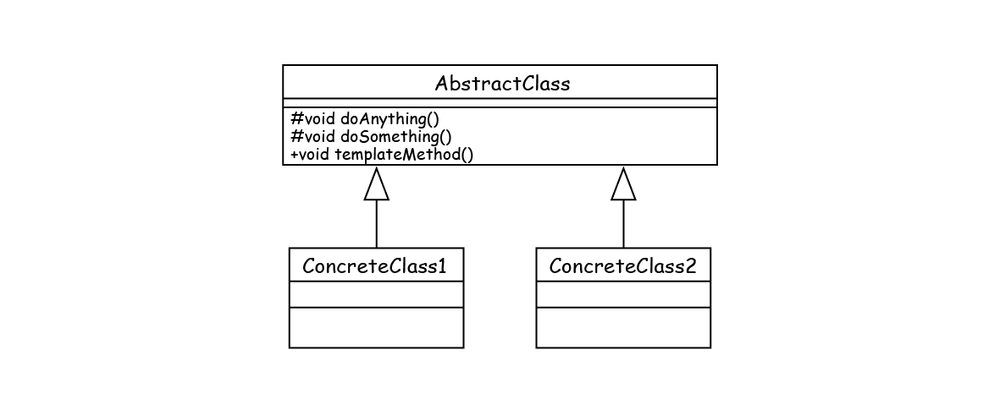

模板方法模式
模板方法模式通用模板
模板方法模式通用类图

模板方法模式的优缺点
抽象模板方法的种类（《设计模式之禅》-P93）
- 基本方法： 基本方法也叫作基本操作，是由子类实现的方法，并且在模板方法被调用。抽象模板中的基本方法尽量设计为protected类型，符合迪米特法则，不需要暴露的属性或方法尽量不要设置为protected类型。实现类若非必要，尽量不要扩大父类中的访问权限。
- 模板方法： 可以有一个或几个，一般是一个具体的方法，也就是一个框架，实现对基本方法的调度，完成固定的逻辑。为了防止恶意的操作，一般模板方法都加上final关键字，不允许被覆写。
模板方法模式使用场景（《设计模式之禅》-P95）
- 多个子类有公有的方法，并且逻辑基本相同时；
- 重要、复杂的算法，可以把核心算法设计为模板方法，周边的相关细节功能则由各个子类实现；
- 重构时，模板方法模式是一个经常使用的模式，把相同的代码抽取到父类中，然后通过钩子函数（见“模板方法模式的扩展”）约束其行为。